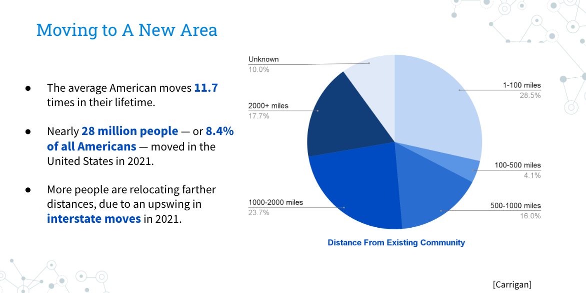
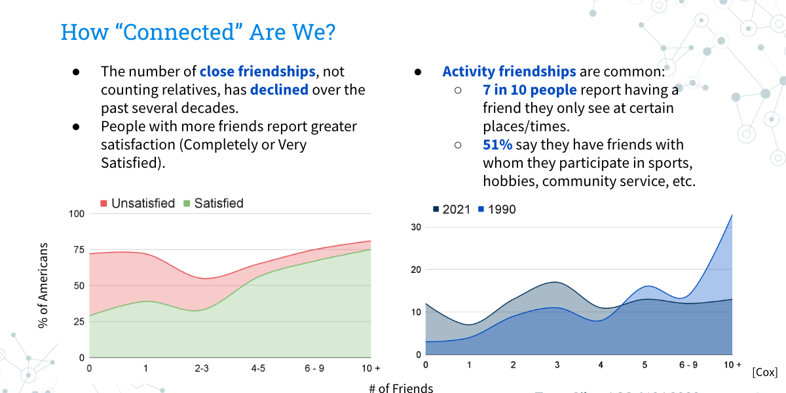

Problem statement
People lack effective resources to explore their local community, find and maintain relevant activities and hobbies, and increase connectedness with other individuals.
Background
Disconnection from the community
-
Individuals and families moving to a new area provides a need to establish new roots
-
Daunting task of finding a group, finding meeting times, and finding locations - individuals may give up before success
Getting back into the “real world”
-
Need a more effective way to find tailored events
-
Need to find quality groups that add value with limited to no wasted time
Local businesses lack an effective way to reach interested customers
-
Hosting trivia nights, book clubs, meet and greets could have a higher turn out with a targeted audience
-
Businesses providing a space for for clubs and organizations can be mutually beneficial

